既是慈善医院也是葡萄园大地主，探秘博讷济贫院的不同面孔
法国旅游发展署 ·
500多年前，
百年战争的硝烟尚未散尽，
瘟疫与饥荒席卷着整个勃艮第。
眼看着贫病交加、无家可归的人越来越多，1443年，勃艮第公爵的财政大臣尼古拉·罗林 (Nicolas Rolin) 与妻子决定拿出家财，在博讷 (Beaune) 建起了一所救济医院，专门收留穷人和病患。
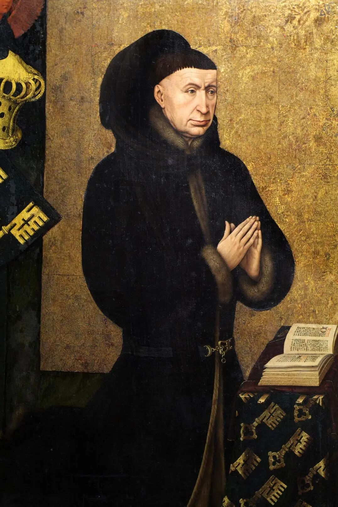
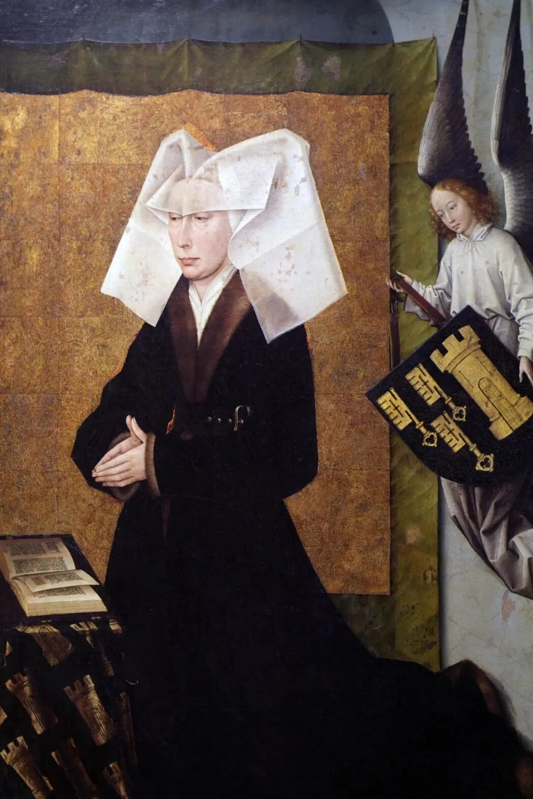
©Beaune Tourisme
它有一个很特别的名字：
Hôtel-Dieu，
直译过来是「上帝之家」。
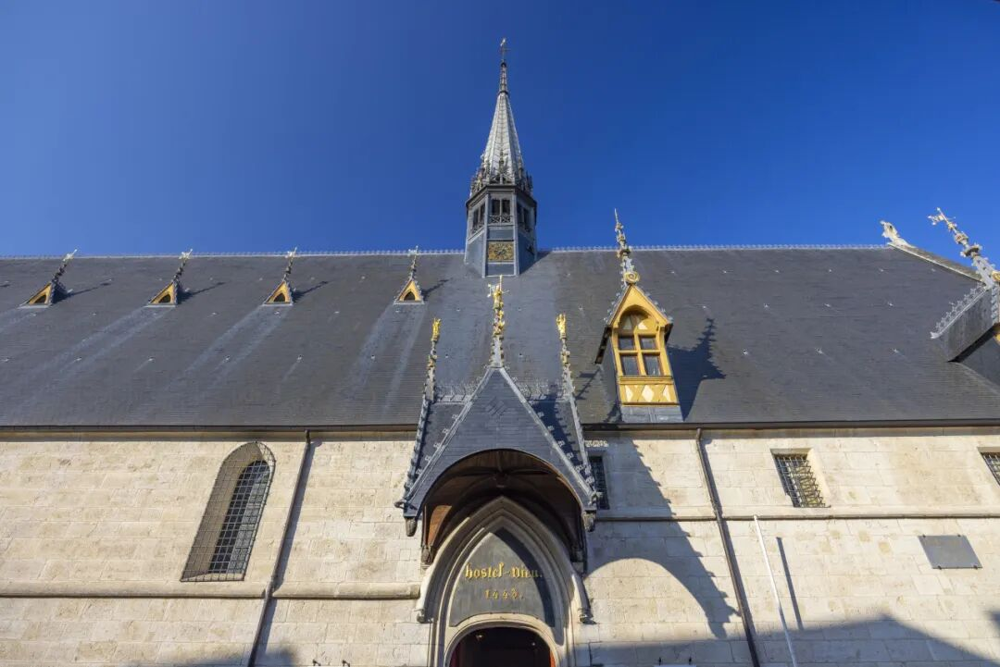
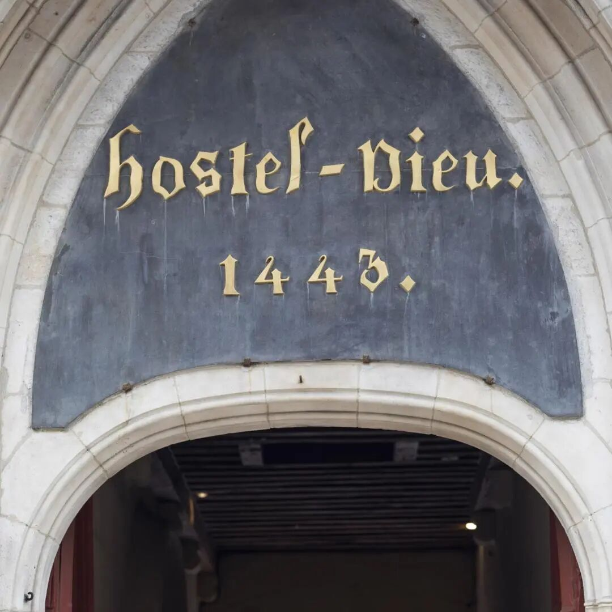
©iStock-phbcz, Beaune Tourisme-David CESBRON
这份沉甸甸的善意后成为博讷济贫院 (Hospices de Beaune) 的信条：
为穷苦之人提供庇护
喜欢法国老电影的朋友，或许会觉得这里有些眼熟，没错，这里就是经典喜剧《虎口脱险》的取景地。
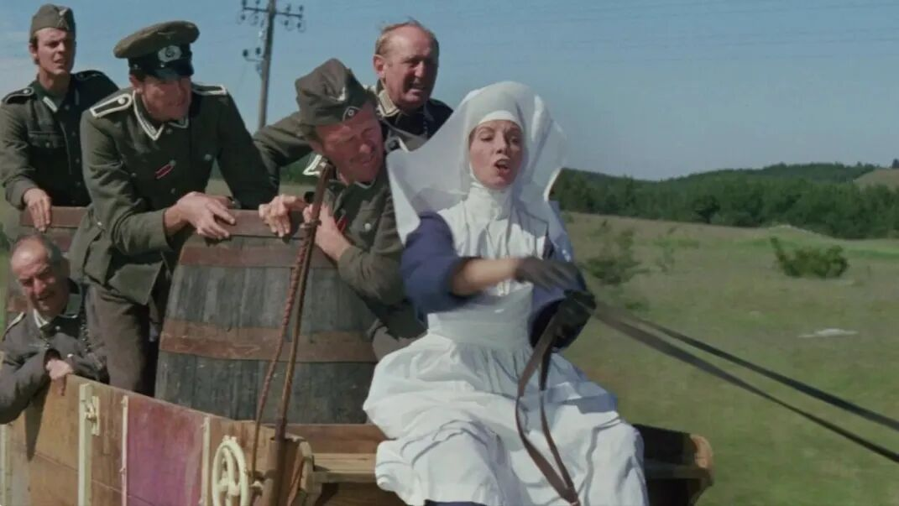
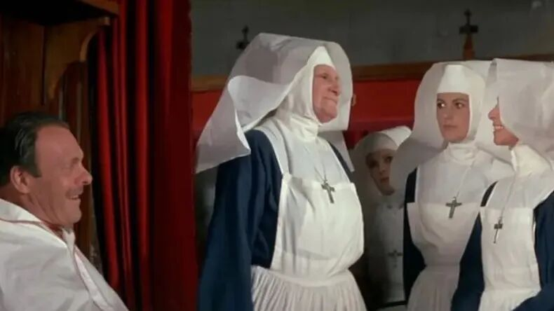
《虎口脱险》电影截图
走进庭院，
先近距离欣赏一下建筑之美。
©iStock-Christine944, eli77
红、绿、黄、黑等颜色交织成几何图案，用的是勃艮第代表性的彩色釉面瓦，搭配哥特式建筑的尖顶与立面，庄重之中带着几分鲜活。
进门就能看到保存完好的中世纪病房：穷人大厅 (Salle des Pôvres)。当年，病人住在独立的小隔间里，床铺沿着大厅两侧排列，和今天我们印象中的医院大不一样。走近看更是发现这些住院设备并不“简陋”，彩绘木梁、精致丝绒幔帐、墙上的挂毯……远远超越那个年代“穷人”的配置。
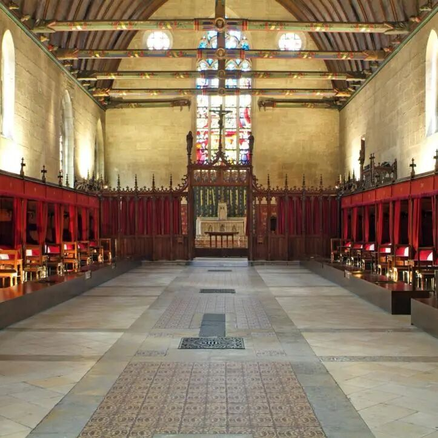
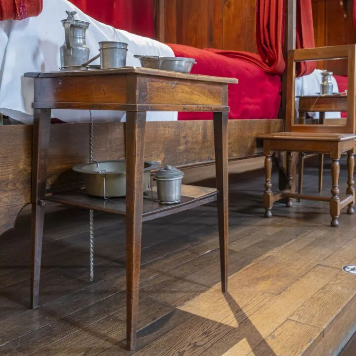
©Beaune Tourisme, iStock-HildaWeges
没错了，这座医院从建造之初，一切都是当时顶配，它不仅仅是一个慈善济贫院，而是一座通往天国的宫殿。罗林邀请了当时顶尖的艺术家参与装饰，其中就包括佛兰德斯画家罗吉尔·凡·德·韦登 (Rogier van der Weyden) 所创作的《最后的审判》多联祭坛画——如今博讷济贫院名副其实的镇馆之宝。
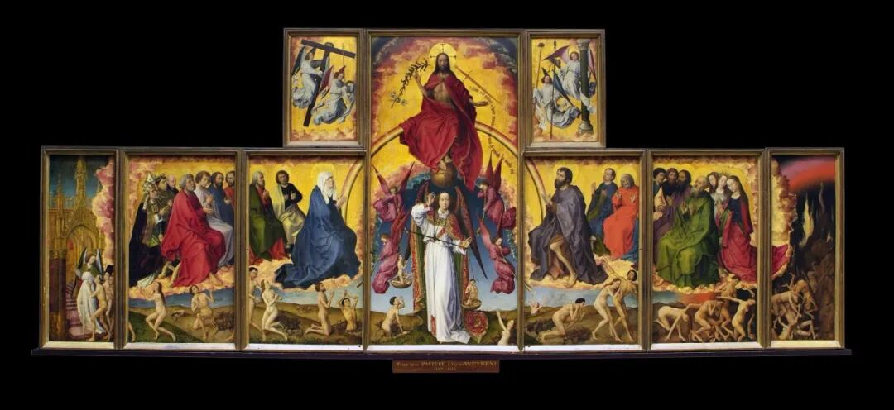
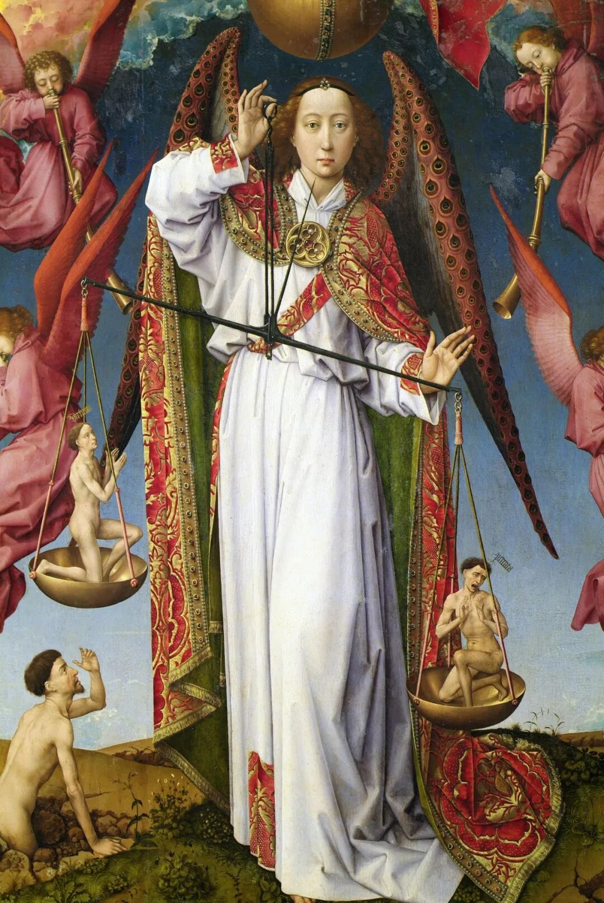
©Beaune Tourisme-Francis Vauban
这幅描绘了天堂、人间、地狱的恢宏巨制原本安放在穷人大厅的礼拜堂主祭坛上方，正是每位病人、医护人员每天都会看到的画面。可以想象一下，在那医疗水平有限的遥远时代，有多少在苦痛中挣扎的灵魂因此获得心灵的慰藉。而画面正中央，大天使圣米歇尔正拿着秤，秤算灵魂的重量和凡人一生的功过。
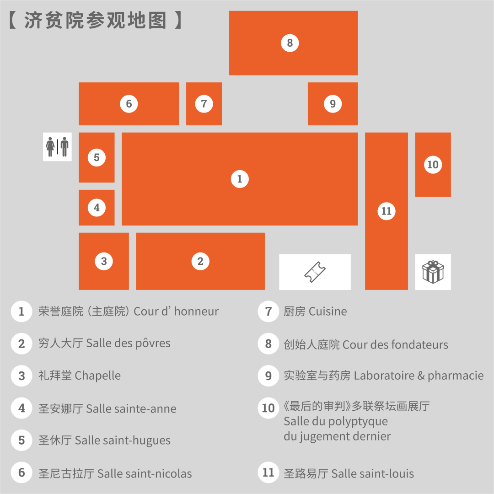
最初，博讷济贫院的护理工作由修女们承担。在这里工作的第一批修女来自北部的瓦朗谢讷 (Valenciennes)，她们不仅负责照料病人、准备饭食，并参与农活和葡萄采收。
©iStock-HildaWeges
博讷济贫院的修女们常戴着尖顶帽 (Hennin) 和面纱，这种着装在中世纪晚期，深受贵族女性追捧。
《博讷济贫院的修女们》
约瑟夫·贝伊 Joseph Bail
(1862—1921)
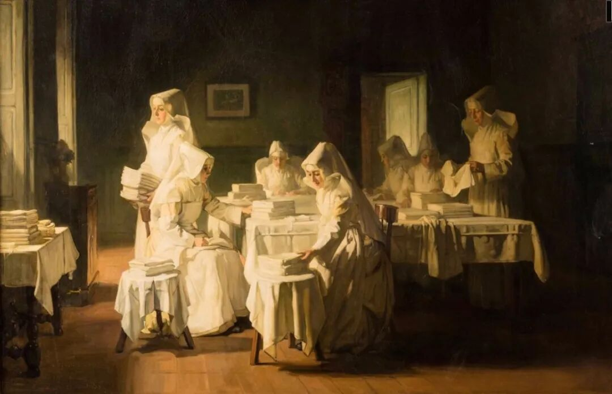
如今，济贫院的旧药房 (Apothicairerie) 内，还陈列着各式陶制药罐，记录着修女们过去的配药方式。
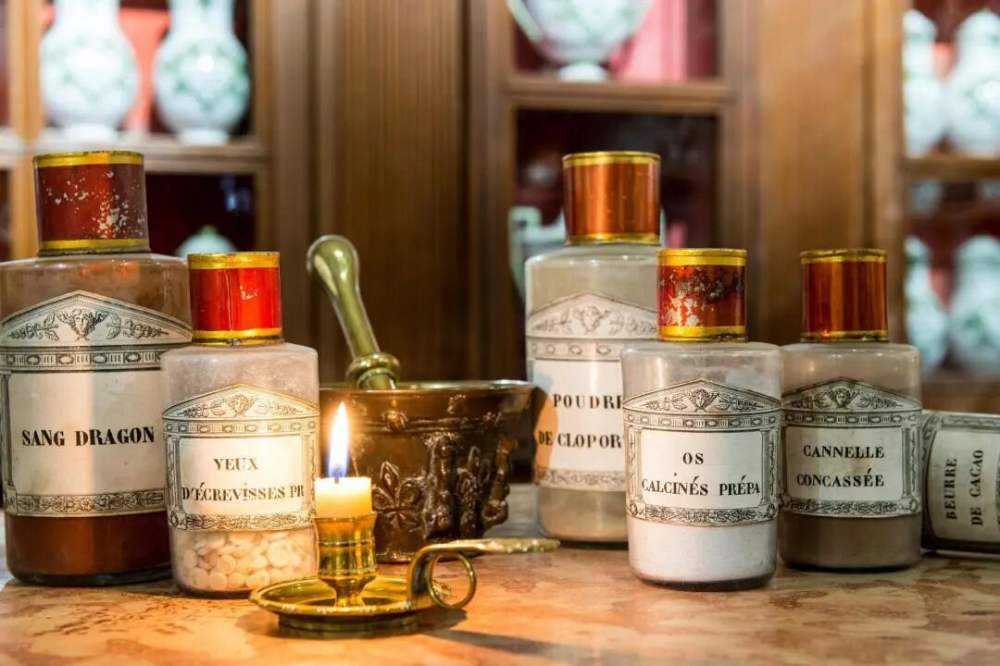
©Beaune Tourisme
从20世纪70年代后，济贫院不再作为医院存在，而是变为博物馆，作为文化遗产建筑，向公众开放。
五百余年的慈善故事
酿成了60公顷葡萄园
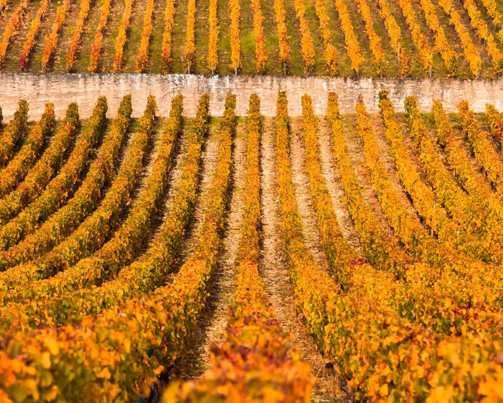
©iStock-javarman3
免费救治病患，还要长期提供食物、药品，济贫院如何长久维持？钱又从何而来？
尼古拉·罗林夫妇在创办时就考虑到了这一点，他们除了自己补贴开销，还将名下的盐场收益拨给医院。
1457年，济贫院收到了一份特别的捐赠——约 2500平方米葡萄园，捐赠者是一个叫吉约特·勒韦里耶 (Guillotte le Verrier) 的庄主，他的慷慨善举成为了博讷济贫院历史上的一个首创。此后，越来越多的贵族、富商，地主纷纷效仿，开始向济贫院捐赠葡萄园。
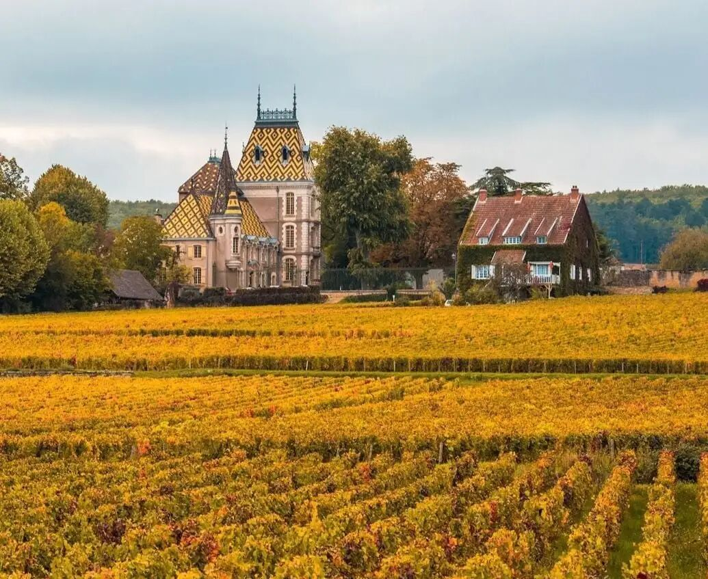
©Javarman / Adobe Stock - Cchâteau de Corton André, en Bourgogne
如今，博讷济贫院葡萄酒庄园 (Domaine viticole des Hospices de Beaune) 已拥有约60公顷葡萄园，遍布在博讷丘 (Côte de Beaune)、夜丘 (Côte de Nuits) 以及马贡(Mâconnais) 等勃艮第知名产区，其中不乏一级园(Premiers Crus) 和特级园 (Grands Crus)。
每年秋冬，这些葡萄园酿出的美酒还会出现在一场特别的慈善拍卖会上。
每年11月的重头戏
一场世界级葡萄酒拍卖会
博讷济贫院葡萄酒拍卖会
Vente des Vins
des Hospices de Beaune
2026年11月15日
─ 星期日 ─
14:30
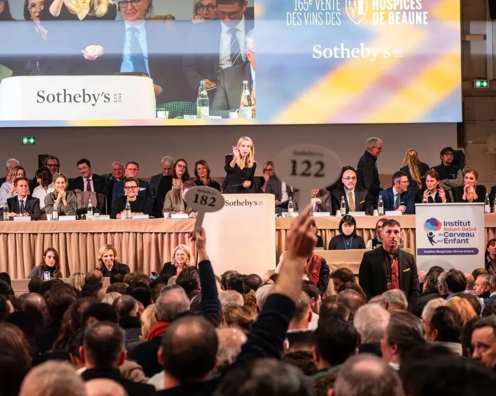
©Vente Des Vins Encheres Quentin Lahaie
博讷是法国的葡萄酒重镇，素有「勃艮第葡萄酒之都」的美誉。它坐落在葡萄园连绵的金丘 (Côte-d’Or) 地带，距离第戎约40公里。
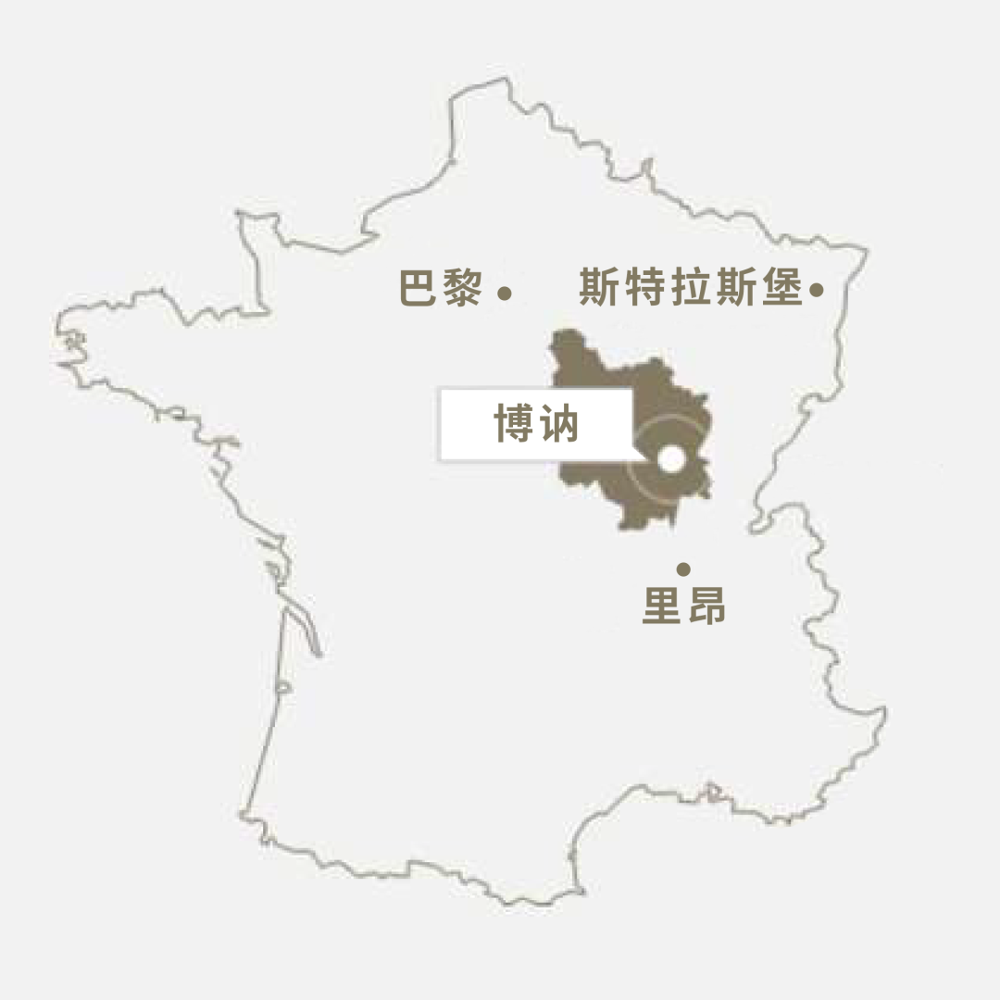
每年11月的第三个周末，明星、政要、王室成员等各界名人，齐聚这座小城，为一场葡萄酒慈善拍卖助阵。
©Micha Patault - Sotheby's
这个传统开始于1859年，距今已有上百年的历史，拍卖的酒款全部来自济贫院的葡萄园，所得则用于支持医院的慈善事业。
拍卖会竞拍的是一桶桶尚未装瓶的新酒，勃艮第传统的橡木酒桶称为 "Pièce"，容量通常为228升，差不多能装满300瓶酒。
落槌还不算完，想喝上这桶酒，还得再等一等：葡萄酒要继续在橡木桶中熟成，之后再由酒商装瓶。
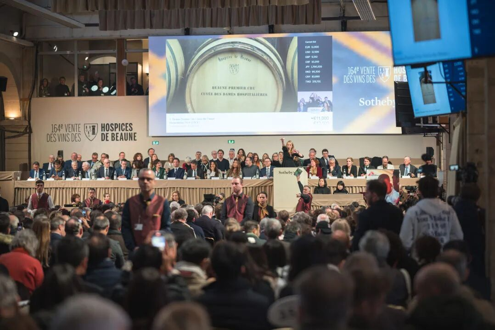
©Les Festivinales
在众多拍卖酒款中，总统慈善酒桶 (Pièce des Présidents) 格外特别。它由博讷济贫院每年专门挑选，通常选自特级园或一级园，成交价也是全场最高的。
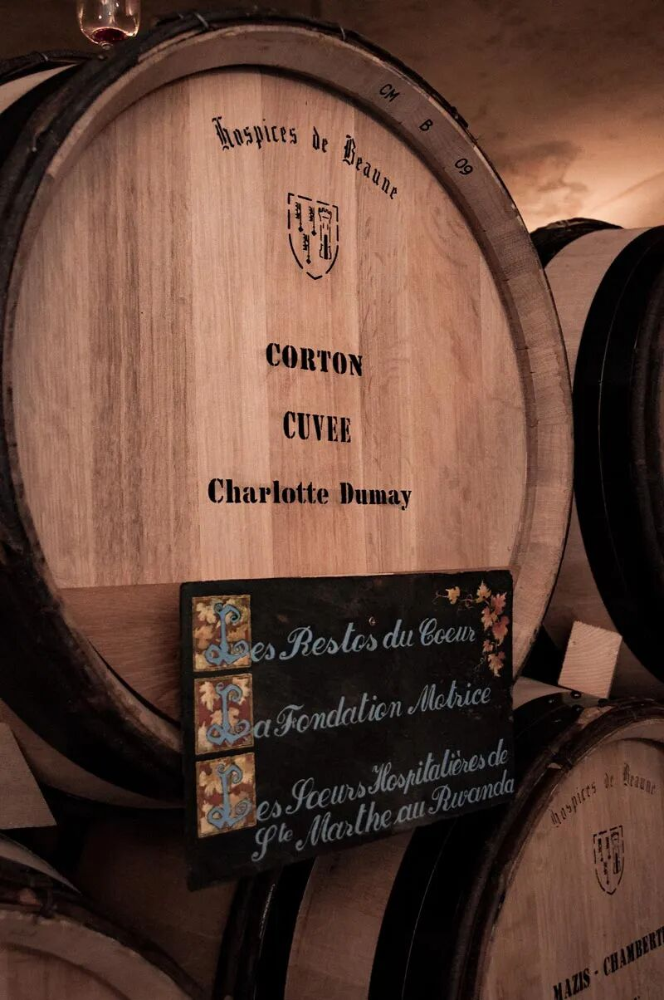
©Hospices de Beaune
→
PS：2022年，总统慈善酒桶创下81万欧元的历史最高成交纪录。 这桶来自 Corton Grand Cru 特级园的葡萄酒，拍卖所得用于支持儿童慈善事业。
普通游客也能喝到
济贫院的珍藏酒
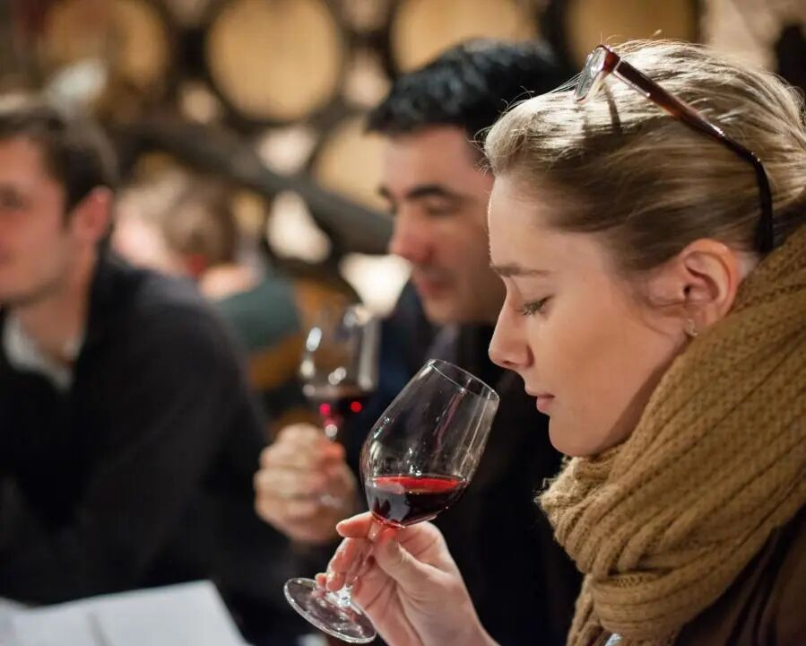
©Beaune Tourisme-Michel Joly
虽然葡萄酒拍卖主要面向专业买家，但普通游客也是有机会喝到济贫院珍藏的！
拍卖会的周末，会有专门的品酒体验活动，可以参观酒窖，跟随酿酒师品尝几款来自济贫院葡萄园的佳酿。
©Beaune Tourisme
• 实 用 信 息 •
地址
Ancienne Cuverie des Hospices de Beaune 16-18 rue Louis Véry, Beaune
日期
11月14日 (周六)、11月15日 (周日)
场次
周六：8:30—11:00、14:00—17:00
周日：8:30—10:45
老城的卡诺广场 (Place Carnot) 还有庆典，35个美食摊儿摆着诱人的勃艮第风味，葡萄酒、奶酪、香肠、蜗牛……可以一路边逛边吃，碰上正在巡游的乐队，气氛就更 high 了~
©Beaune Tourisme
在博讷，葡萄酒的故事
从来不只存在于酒杯之中。
它写在济贫院的历史里，
留在古老酒窖的橡木桶中，
也延续在每年11月的拍卖会上。
从一片葡萄园到一桶慈善佳酿，
这座勃艮第小城用五百余年，
将风土、传统与善意酿成了独家记忆。


法小旅的官网有更多精彩消息